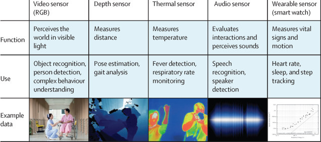

Trustworthy AI

Ethical Issues in Using Ambient Intelligence in Health-care Settings
Nicole Martinez-Martin, Zelun Luo, Amit Kaushal, Ehsan Adeli, Albert Haque, Sara S Kelly, Sarah Wieten, Mildred K Cho, David Magnus, Li Fei-Fei, Kevin Schulman, Arnold Milstein
The Lancet Digital Health, Volume 3, Issue 2, February 2021